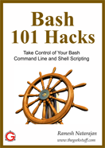
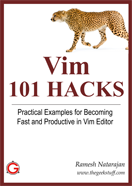

An experienced Linux sysadmin knows the importance of running the routine maintenance jobs in the background automatically.
Linux Cron utility is an effective way to schedule a routine background job at a specific time and/or day on an on-going basis.
This article is part of the on-going Productivity Tips For Geeks series. In this article, let us review 15 awesome examples of crontab job scheduling.
Linux Crontab Format
MIN HOUR DOM MON DOW CMD
| Field | Description | Allowed Value |
|---|---|---|
| MIN | Minute field | 0 to 59 |
| HOUR | Hour field | 0 to 23 |
| DOM | Day of Month | 1-31 |
| MON | Month field | 1-12 |
| DOW | Day Of Week | 0-6 |
| CMD | Command | Any command to be executed. |
1. Scheduling a Job For a Specific Time Every Day
The basic usage of cron is to execute a job in a specific time as shown below. This will execute the Full backup shell script (full-backup) on 10th June 08:30 AM.
Please note that the time field uses 24 hours format. So, for 8 AM use 8, and for 8 PM use 20.
30 08 10 06 * /home/ramesh/full-backup
- 30 – 30th Minute
- 08 – 08 AM
- 10 – 10th Day
- 06 – 6th Month (June)
- * – Every day of the week
2. Schedule a Job For More Than One Instance (e.g. Twice a Day)
The following script take a incremental backup twice a day every day.
This example executes the specified incremental backup shell script (incremental-backup) at 11:00 and 16:00 on every day. The comma separated value in a field specifies that the command needs to be executed in all the mentioned time.
00 11,16 * * * /home/ramesh/bin/incremental-backup
- 00 – 0th Minute (Top of the hour)
- 11,16 – 11 AM and 4 PM
- * – Every day
- * – Every month
- * – Every day of the week
3. Schedule a Job for Specific Range of Time (e.g. Only on Weekdays)
If you wanted a job to be scheduled for every hour with in a specific range of time then use the following.
Cron Job everyday during working hours
This example checks the status of the database everyday (including weekends) during the working hours 9 a.m – 6 p.m
00 09-18 * * * /home/ramesh/bin/check-db-status
- 00 – 0th Minute (Top of the hour)
- 09-18 – 9 am, 10 am,11 am, 12 am, 1 pm, 2 pm, 3 pm, 4 pm, 5 pm, 6 pm
- * – Every day
- * – Every month
- * – Every day of the week
Cron Job every weekday during working hours
This example checks the status of the database every weekday (i.e excluding Sat and Sun) during the working hours 9 a.m – 6 p.m.
00 09-18 * * 1-5 /home/ramesh/bin/check-db-status
- 00 – 0th Minute (Top of the hour)
- 09-18 – 9 am, 10 am,11 am, 12 am, 1 pm, 2 pm, 3 pm, 4 pm, 5 pm, 6 pm
- * – Every day
- * – Every month
- 1-5 -Mon, Tue, Wed, Thu and Fri (Every Weekday)
4. How to View Crontab Entries?
View Current Logged-In User’s Crontab entries
To view your crontab entries type crontab -l from your unix account as shown below.
ramesh@dev-db$ crontab -l @yearly /home/ramesh/annual-maintenance */10 * * * * /home/ramesh/check-disk-space [Note: This displays crontab of the current logged in user]
View Root Crontab entries
Login as root user (su – root) and do crontab -l as shown below.
root@dev-db# crontab -l no crontab for root
Crontab HowTo: View Other Linux User’s Crontabs entries
To view crontab entries of other Linux users, login to root and use -u {username} -l as shown below.
root@dev-db# crontab -u sathiya -l @monthly /home/sathiya/monthly-backup 00 09-18 * * * /home/sathiya/check-db-status
5. How to Edit Crontab Entries?
Edit Current Logged-In User’s Crontab entries
To edit a crontab entries, use crontab -e as shown below. By default this will edit the current logged-in users crontab.
ramesh@dev-db$ crontab -e @yearly /home/ramesh/centos/bin/annual-maintenance */10 * * * * /home/ramesh/debian/bin/check-disk-space ~ "/tmp/crontab.XXXXyjWkHw" 2L, 83C [Note: This will open the crontab file in Vim editor for editing. Please note cron created a temporary /tmp/crontab.XX... ]
When you save the above temporary file with :wq, it will save the crontab and display the following message indicating the crontab is successfully modified.
~ "crontab.XXXXyjWkHw" 2L, 83C written crontab: installing new crontab
Edit Root Crontab entries
Login as root user (su – root) and do crontab -e as shown below.
root@dev-db# crontab -e
Edit Other Linux User’s Crontab File entries
To edit crontab entries of other Linux users, login to root and use -u {username} -e as shown below.
root@dev-db# crontab -u sathiya -e @monthly /home/sathiya/fedora/bin/monthly-backup 00 09-18 * * * /home/sathiya/ubuntu/bin/check-db-status ~ ~ ~ "/tmp/crontab.XXXXyjWkHw" 2L, 83C
6. Schedule a Job for Every Minute Using Cron.
Ideally you may not have a requirement to schedule a job every minute. But understanding this example will will help you understand the other examples mentioned below in this article.
* * * * * CMD
The * means all the possible unit — i.e every minute of every hour through out the year. More than using this * directly, you will find it very useful in the following cases.
- When you specify */5 in minute field means every 5 minutes.
- When you specify 0-10/2 in minute field mean every 2 minutes in the first 10 minute.
- Thus the above convention can be used for all the other 4 fields.
7. Schedule a Background Cron Job For Every 10 Minutes.
Use the following, if you want to check the disk space every 10 minutes.
*/10 * * * * /home/ramesh/check-disk-space
It executes the specified command check-disk-space every 10 minutes through out the year. But you may have a requirement of executing the command only during office hours or vice versa. The above examples shows how to do those things.
Instead of specifying values in the 5 fields, we can specify it using a single keyword as mentioned below.
There are special cases in which instead of the above 5 fields you can use @ followed by a keyword — such as reboot, midnight, yearly, hourly.
| Keyword | Equivalent |
|---|---|
| @yearly | 0 0 1 1 * |
| @daily | 0 0 * * * |
| @hourly | 0 * * * * |
| @reboot | Run at startup. |
8. Schedule a Job For First Minute of Every Year using @yearly
If you want a job to be executed on the first minute of every year, then you can use the @yearly cron keyword as shown below.
This will execute the system annual maintenance using annual-maintenance shell script at 00:00 on Jan 1st for every year.
@yearly /home/ramesh/red-hat/bin/annual-maintenance
9. Schedule a Cron Job Beginning of Every Month using @monthly
It is as similar as the @yearly as above. But executes the command monthly once using @monthly cron keyword.
This will execute the shell script tape-backup at 00:00 on 1st of every month.
@monthly /home/ramesh/suse/bin/tape-backup
10. Schedule a Background Job Every Day using @daily
Using the @daily cron keyword, this will do a daily log file cleanup using cleanup-logs shell scriptat 00:00 on every day.
@daily /home/ramesh/arch-linux/bin/cleanup-logs "day started"
11. How to Execute a Linux Command After Every Reboot using @reboot?
Using the @reboot cron keyword, this will execute the specified command once after the machine got booted every time.
@reboot CMD
12. How to Disable/Redirect the Crontab Mail Output using MAIL keyword?
By default crontab sends the job output to the user who scheduled the job. If you want to redirect the output to a specific user, add or update the MAIL variable in the crontab as shown below.
ramesh@dev-db$ crontab -l MAIL="ramesh" @yearly /home/ramesh/annual-maintenance */10 * * * * /home/ramesh/check-disk-space [Note: Crontab of the current logged in user with MAIL variable]
If you wanted the mail not to be sent to anywhere, i.e to stop the crontab output to be emailed, add or update the MAIL variable in the crontab as shown below.
MAIL=""
13. How to Execute a Linux Cron Jobs Every Second Using Crontab.
You cannot schedule a every-second cronjob. Because in cron the minimum unit you can specify is minute. In a typical scenario, there is no reason for most of us to run any job every second in the system.
14. Specify PATH Variable in the Crontab
All the above examples we specified absolute path of the Linux command or the shell-script that needs to be executed.
For example, instead of specifying /home/ramesh/tape-backup, if you want to just specify tape-backup, then add the path /home/ramesh to the PATH variable in the crontab as shown below.
ramesh@dev-db$ crontab -l PATH=/bin:/sbin:/usr/bin:/usr/sbin:/home/ramesh @yearly annual-maintenance */10 * * * * check-disk-space [Note: Crontab of the current logged in user with PATH variable]
15. Installing Crontab From a Cron File
Instead of directly editing the crontab file, you can also add all the entries to a cron-file first. Once you have all thoese entries in the file, you can upload or install them to the cron as shown below.
ramesh@dev-db$ crontab -l no crontab for ramesh $ cat cron-file.txt @yearly /home/ramesh/annual-maintenance */10 * * * * /home/ramesh/check-disk-space ramesh@dev-db$ crontab cron-file.txt ramesh@dev-db$ crontab -l @yearly /home/ramesh/annual-maintenance */10 * * * * /home/ramesh/check-disk-space
Note: This will install the cron-file.txt to your crontab, which will also remove your old cron entries. So, please be careful while uploading cron entries from a cron-file.txt.
Awesome Linux Articles
Following are few awesome 15 examples articles that you might find helpful.
- Mommy, I found it! — 15 Practical Linux Find Command Examples
- 15 Examples To Master Linux Command Line History
- Unix LS Command: 15 Practical Examples
- Get a Grip on the Grep! – 15 Practical Grep Command Examples

If you enjoyed this article, you might also like..
|  |  |

 My name is Ramesh Natarajan. I will be posting instruction guides, how-to, troubleshooting tips and tricks on Linux, database, hardware, security and web. My focus is to write articles that will either teach you or help you resolve a problem. Read more about
My name is Ramesh Natarajan. I will be posting instruction guides, how-to, troubleshooting tips and tricks on Linux, database, hardware, security and web. My focus is to write articles that will either teach you or help you resolve a problem. Read more about
{ 88 comments… read them below or add one }
Another great post. Thank you.
Good One ……
gud job dude
Thanks
It’s very use full.
NICE & HELP FULL tips…!! I appreciate your effort for posting such a informational daily LINUX activity
Just came up at the right time
great tutorial, keep up good work
Thanks Ramesh.
Concise and yet very useful, I especially like examples 7, 11 and 14.
Man, it just came in handy. Thank you very much.
Shameless plug: I have created a GUI web interface to create crontab command. I hope someone will find this useful.
One can use the English abbreviated day of the week in place of the numbers
0=Sun
1=Mon
2=Tue
3=Wed
4=Thu
5=Fri
6=Sat
so
30 1 * * Mon-Fri /sbin/poweroff
is equivalent to
30 1 * * 1-5 /sbin/poweroff
Will do a system shutdown at 1:30 AM on weekdays. Which is easier to read?
@Mahesh, Mihir, Anil, Shashank, Rajesh, Balac, Ray, Denny,
Thanks a lot for your comment. I’m very glad you found this tutorial helpful.
@Jeroen,
Yeah. “#7 – Running a job every x minutes” is something you may use it frequently. Regarding #14, is very convenient when you have lot of entries in your crontab, where you don’t need to give the full path.
@Binny,
Your crontab code generator looks great. You just need to add the keyword option there. (i.e @yearly, @daily, @hourly, @reboot etc.,)
@Leslie,
Thanks for pointing that out. You are so right. There is no doubt that Sun is much easier to read then 0. I’ve seen few sysadmins making the following mistakes:
1. Starting their 0-6 count with Monday. So, this makes 6 as sunday, which is wrong.
2. Entering 7 for Sunday, thinking 1-7 is valid, which is wrong.
Your suggestion would help to avoid the above two mistakes. Thank you.
Hello Ramesh,
i am trying to add a cronjob to the root file in my cron directory. so far my added cronjob: crmphonescript is not working. Please see the last entry in the source code provided. any help will be great!
Filepath: var/spool/cron/root
Filename: root
source code:
Filepath: scripts/crmphonescript
Filename: crmphonescript
source code:
#!/usr/bin/perl $host="localhost"; $username="florida_florida"; $admin_password="*****"; $db_name="florida_joomla"; mysql_connect("$host", "$username", "$admin_password")or die("cannot connect"); mysql_select_db("$db_name")or die("cannot select DB"); $sql="update jos_holder set id = 4 where id = 3"; $result=mysql_query($sql); exit;@Paul,
Check the following:
- /var/log/cron file for any error messages.
- put a debug message inside your shell script to see whether it really gets executed.
- Put > /tmp/script.log at the end of the cron entry for this script and debug it.
- Put 2> /tmp/error-script.log at the end of the cron entry for this script to see whether it writes any error message to the log file.
Ramesh,
ok. i added the following to my command:
*/1 * * * * /scripts/crmphonescript > /tmp/script.log
and added the following to my shell script:
$sql=”update jos_holder set id = 4 where id = 3″;
$result=mysql_query($sql);
if (!$result) {
echo “could not execute script”
}
exit;
how do i now check for any error messages?
Is there a command in linux to display a message in Gnome or KDE (and include the terminal).
Suppose I have a scheduled Cron job to do maintenance every Sunday night,
I would like to send out warning messages to display on Gnome, or KDE, as an alert that they may have to acknowledge. (Example. “System going off-line at 01:30am for maintenance, Please log off by then” )
I would have a crontab entry as follows
5,10,15,20,25,26,27,28,29 1 * * 0 Command to send warning messages to users on GNOME OR KDE
good
this is really good effort and easy to understand.
thank you.
@Paul, As we discussed over email, following are few suggestions.
- Check the content of the /tmp/script.log
- The mysql commands you’ve given are php related. But you had #!/usr/bin/perl as the 1st line in your script. Try changing it to php (or) change the php-mysql functions to perl-mysql functions.
@Leslie, Following are some suggestions, which you can explore further.
1. Use notify-send “title” “body” to display pop-up in gnome desktop
2. You can also use xmessage to display pop-up on desktop.
@Shankar, @Vanraj, Thanks for your kind words. I’m very glad that you found this article helpful.
Great Cron tutorial. One request about this website though….how about a “Printer Friendly” link at the bottom of these tutorials? Im an old school sysadmin and I keep an “Oh Crap” book…..a hard copy of important info and tips and tricks that I can refer to when the excrement hits the oscillating ventilation device if you know what I mean.
Printer Friendly pages would be a nice touch.
@PaulM,
I’ve added your request about “Printer Friendly” link in my list of to-dos. Thanks a lot for bringing that to my attention. It’s definitely a good idea.
thank u
You can specific different time zone for different cronjob.
Hey Ramesh,
I have a question for you. As a sys-admin, I am sure you will have bunch of things in cron. Do you use any apps to visualize these entries? It would be really helpful to see Cron entries on a calendar.
Do you know of any such OSS tool?
Praveen
Hi,
Great article. Is it possible to schedule a job for the first Saturday of the month (every month)? If there is I’m having trouble figuring out how to do it.
Thanks
Don
@Don
1 1 1-7 * 6 CMD
Above should do the hack, but not tested [ let us know the results ].
Explanation: At 1st minute of 1st hour, of 1-7th day of month, at every month. And only on 6th day of week which is Saturday.
On 1-7th of every month, only one Saturday can come.
@SathiyaMoorthy
Thanks, I’ll give it a try. I’ll play with the settings so I can try it for this weekend so we won’t have to wait till next month to see if it works.
@SathiyaMoorthy
It didn’t work
I set it to 0 12 1-11 * 4 cmd and it lauched yesterday (Thursday) which it was supposed to do but it also launched today (Friday) which it was not supposed to do.
I guess I could schedule it to run every Saturday and in the script check to see if the day-of-month is less that 8. If so run, if not exit.
Thanks
Don
Very nicely explained . Thanks for explaining all major usage patterns in a single article.
Rgds
can any body explain how to run cron jobs in /etc/crontab
Does anybody knows how to setup a cron job to run every other week on any of the week days.
For example: I need to run a job at 10 AM on Monday but every other Monday.
I tried this and did not work:
00 10 */14 * 1 /my command
Thanks,
Very informative…and superb way to demonstrate daily usages…
How to set up one time Cron Job ?
Just fill out the line with
mm hh dayofmonth monthyear dayofweek command
it will work on that day,
30 1 31 5 Mon echo “Do this command in a year where May 31 is a Monday”
for one off jobs use the ‘at’ command. cron actually runs both ‘at’ and ‘cron’ jobs ( the ‘c’ and ‘a’ in the log file ). at is very flexible wrt scheduling, and at copies your current environment before running the job so no more anooying erros with your profile, path, etc. also you don’t have to remember to remove your one off job from your crontab, or take that extra small risk of making a mistake each time you edit your crontab. btw, to reduce the chance of making a mistake while edting your crontab, consider doing something like :
crontab -l > crontab.old
cp crontab.old crontab.new
vi crontab.new
diff crontab.old crontab.new
crontab crontab.new
a good habit to get into esp. if you want to minimise the chance of an error in a production environment.
excellent!!!
have never seen better manual
@Don
@SathiyaMoorthy
To execute a script on some days of a week and only between some days of a month you can do it this way:
# Nur am Montag (1) oder am Donnerstag (4)
10 19 2-27 * * if [ "$(date +\%u)" = "1" ] || [ "$(date +\%u)" = "4" ] ; then ./yourscript.sh ; fi
This here will not work !!!
10 19 2-27 * 1,4
Really nice manual. Is there any way to set up a cron job to run a script Monday through Friday, every 1 minute starting at 7:00AM and ending at 6:30PM? I am wondering if this is possible just with the minute/hour/date/month/day specifiers. I saw an example in one of the comment posts which used a if-then conditional execution of a script. Is that the only way to go.
@Ashwin Raj
Monday through Friday, every 1 minute starting at 7:00AM and ending at 6:30PM?
Try this one with two entries, but with no guarantee.
*/1 7-17 * * 1-5 yourscript.sh
0-30/1 18 * * 1-5 yourscript.sh
Combination of day of month and day of week parameter is treaten as OR condition by crontab and therefor I used an if statement to solve this situation.
Hi Ramesh,
This is Bhanu new for the Linux platform planning to give certification.
I read your module.Its excellent ,I want to know about the monthly cron job u have just mentioned about that but u didnt mnetion aboout the syntax is this right
0 0 1 * * cmd.
is this right?
Thnx
* * * * * history > ~/Desctop/file
I tryied to make a backup of history, but this way is not working.
Cron is creating a file, but the date isn’t getting there.
Help me, thanks and cheers
I can set a cron to run every 5 minutes from 8pm – 11pm (20-23), but what I can’t do is set one to run every 5 minutes from 11:pm-midnight. (23-00)
How do you set a cron to run every 5 minutes the last hour of the day?
Any help would be appreciated.
How do you set a cron to run every 5 minutes the last hour of the day?
Try this:- */5 23-00 * * * command
very very helpful to freshers good job
How to set a crontab a specific one year i.e. from 2010 Aug 5th to 2011 Aug 4th?
How do I write a shell script to automate logging user login activity to detect unauthorized remote access attempts.
very useful information about cron.thanks…
hey, Ramesh…
I got some trouble for doing crontab…
It seems my cron successfully schedule but the command didnt run.
what’s the possibility my schedule didnt work eh?
Hi. Thank you for your article, but I really hope you can help with a problem I’m having. I have the following in my crontab : */1 * * * * DISPLAY=:0.0 fbsetbg -r /home/graham/Pictures/Wallpapers
But that also changes the login background. Is there a way to stop cron from starting until AFTER I login?
hey graham,
Try to execute this one to stop cron
[quote]
$> crontab -u userName -r
[/quote]
good luck!
Hi g. Sorry, but i thought i should let you know i’ve discovered that i don’t get same problem with KDM (while using lucid) but on the other hand, i FINALLY managed to downgrade gdm to 2.20 and theres no problems, so it might be a plymouth problem?
not sure. probably yes.
Hi,
in my environment i use crontab file to import cron’s table. it’s working great, but sometimes file has some syntax errors. is there any possibility to check file before importing it (of course, done automatically, not by hand).
regards,
p.
never heard for it.
Syntax error is human made mistake.
Means all are in manual.
I just wanted to mention that Linux (well at least the RH based versions, not sure about Deb.) has 3 different cron methods. They can get confusing to someone who comes over from Unix (like me).
1) user defined cronjobs. This is the one you can use the crontab -l, crontab -e, etc. for. The crontab files with crontab formatted entries are stored in /var/spool/cron.
2) For root cron jobs, there’s the file /etc/crontab. Another with crontab formatted entries. When you use the crontab commands when you are root, like crontab -l, you will NOT see the entries in this file, you will see the entries in /var/spool/cron/root.
3) The last is another for root only. If you look in the file /etc/crontab, you’ll it has crontab formatted entries pointing to these directories in /etc:
cron.hourly
cron.daily
cron.monthly
cron.weekly
- each of those directories contain regular script files. Drop a script in one of those, and it will get executed when /etc/crontab call it.
Thanks>
these are very helpful for me for my project.
sir could u give me suggesion how to use it with shared memory
thank u sir/mam.
htop is a good alternative to top. It is quite easier to use, allows to scroll the process list horizontally and vertically and also a tree-view of the processes.
Very nice.. easy to understand 4 begginers….
cron Job for every 2nd sunday
* * 8-14 * * if [ `date +\%a` = "Sat" ]; then /apps/scripts/test.ksh; fi >> testlog
These will not work:-
* * 8-14 * 0 if [ `date +\%a` = "Sat" ]; then /apps/scripts/test.ksh; fi >> testlog
or
* * 8-14 * 0 /apps/scripts/test.ksh >> testlog
It helped me alot..
I came to a situation where the same user needs to run scripts for 2 environment settings.
Can I just set PATH twice in the cron file, first at the beginning for the first environment and then in the middle for the rest of the scripts belonging to the second environment?
Something like this:
PATH=path1…
0 * * * 0 sunday_script
0 0 * * 1 monday_midnight command
PATH=path2…
30 12 * * * noon_script every day (second environment)
hai ramesh
I have a doubt about how to send e-mail for particular user for process completed,if a process completed 35% or 45% we need to send a mail for a root user or other user
please explain this critical situation,i want clarification about this as soon as possible
i want explain about this sending e-mail & checking process percentage[%] give command to find that
i hope soon you will reply for me
RMS
Thanks, very useful tips
Great examples
How to schedule a Cron job twice in a day ? I need to schedule the job every day exactly at 3:45 AM and 6:30 AM. Do I need to Create two cronjob’s or single cronjob will be enough for this?
I need to know how to run a one time specific date Cron Job.
say I needed to remove or move a directory on 6/14/2012. How do you tell it to run in 2012 or any other specified date & year?
thanks.
Please review the crontab table. Therein you will find
Field Description Allowed Value
MIN Minute field 0 to 59
HOUR Hour field 0 to 23
DOM Day of Month 1-31
MON Month field 1-12
DOW Day Of Week 0-6
CMD Command Any command to be executed.
Using the combination of dow, and combination of month and day of month and day of week, you can specifiy annual events, with quite precision.
The nth day of the month falls on a different day every year. Make use of that information
O.K.
This is the command that I am trying to run.
rm -r public_html/file_name
I need to know exactly how to set it up say to run at this exact date of June 4, 2012
can someone please set it up so that I can visually see it.
thanks for all of your time & help
june 4th is a Monday
Setup the crontab to recognize the day as Monday, the month as June, and set the time that you want it to run, June4 on a Monday only occurs once in about 7 years.
If you cannot do this, then ask someone in a college or programming school.
Read the table above about programming the crontab.
Hi Javier,
Looks like you want to run a job only one time and instead of cron you can use the at command to run any job at a scheduled time. However, at will only run the job once, unless the job reschedules itself. at is invoked from the command line or from within a shell script. The basic command is:
at < FILE
where FILE is a shell script of some sort and
can be in several forms, such as 12 or 24 hour clock time, a date and time, an offset to the current time (e.g., now + 5 minutes) or similar.
Thanks for your time & help.
@ Aneesh.
Based on the manual here, it’s called MAILTO, not just MAIL.
Hi All,
You can edit the user jobs from back end. But you should have the root user privilege. The user cronjobs will be located at /var/spool/cron/username
# cat /var/spool/cron/tknalla
* * * * * /usr/local/bin/php /home/tknalla/test.php
# vi /var/spool/cron/tknalla
Instead of running the command “crontab -u tknalla -e”, you can straight away edit this file and can save it.
# crontab -u tknalla -l
0 0 * * * /usr/local/bin/php /home/tknalla/test.php
Thank you guys
Its very useful….osm work…
There is a typo on number 14, you have crontab -l to edit the crontab file. It should be crontab -e
The example in paragraph 14 is correct as is. The author is not trying to edit the crontab, he/she is using the -l to show you the contents of the crontab. And you are correct, -e would be used if you wanted to edit it.
Oops, my bad.
How do we schedule a job running for every 45 mins all day?
S.Senthil
Please look at posting number 5
*/10 * * * * /home/ramesh/debian/bin/check-disk-space
Change the /10 to /45
and change the path to your job.
liked the article.
Mail example didnt work. It works fine if i make it MAILTO instead of MAIL as mentioned in the example.
really a gud job .. every point understandable….
We need to schedule our script with crontab. Our script contains our own env file to initialize some env variables. We got error while running the crontab. Error is “Variable not initialised from .env file”. Could u please let me know how to use the env variables in the crontab?
Thanks in advance for your assistance…
Thank you so much..
There were few cron jobs that were rnning on my machine and i was cheking them by using
crontab -l
command and was getting no cron job mesage
this articles help me and give me understanding of cron jobs and also I have ffind them
Thanx very much
Great article – I’ve come back to it a few times since you published it.
I’m trying to schedule a cron job to run when it is a particular day of the week AND a particular day of the month. (e.g. every Friday 25th).
If I specify both the day of week and date of month in crontab then it seems to take the OR of these two criteria, rather than the AND. (so would run every friday, and every 25th)
Is there another way I can do this? It seems wrong that it would OR the commands rather than AND them – if I wanted to OR them I could just add them as two separate lines in crontab.
Grateful for any tips.
Jamie, You are right, it is an or situation. However, you may use a bash shell command with date to determine if the day is a Friday, Set up the crontab entry to execute every 25th of the month, and in the bash shell test for Friday.
date %a gives 3 letter day of week, date %u tells you the day number of the week.
I would use the day number with an if, or if you want different actions based on the day of the week, I would use date %u with the day number as an entry to a switch statement.
Thanks for the tip Leslie. I ended up installing fcron, which when given two criteria, takes the AND of them as you might expect.